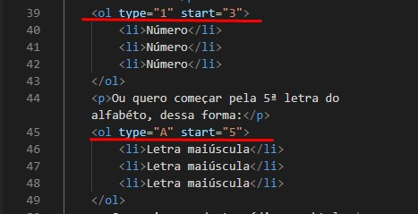
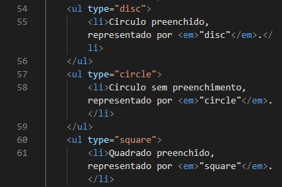
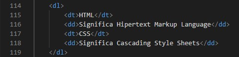

São listas que seguem uma sequência, seja númerica ou alfabética. Representada pela TAG <ol type> e a TAG <li>. Os tipos representados pela "type" são: 1,A,a,I e i. Exemplos:
Para finalizar, também podemos iniciar a contagem da lista por diferentes números ou letras, ou seja, não necessáriamente começando por 01 ou A. Para isso, acrecentamos na tag <ol> a função start="Número". Então por exemplo, quero que minha lista comece pelo número "3":
Ou quero começar pela 5ª letra do alfabéto:
Segue imagem deste código em html:
Diferentemente do anterior, as listas não ordenadas, não precisam ter uma sequência. Geralmente são representadas por tópicos de diversos formatos. No HTML utilizamos 03, sendo eles:
As TAGS utilizadas para esse tipo de representação, são <ul type=""> e <li>. Para uma melhor visualização segue um exemplo em imagem:
Agora, vou realizar o exercicio proposto pelo professor Guanabara em seu PDF chamado Listas HTML.
Básicamente são listas que trazem o termo e sua descrição, lembrando bastante um discionário. Anteriormente vimos que para começar uma lista é necessário uma TAG de abertura, sendo <ol> (listas ordenadas) e <ul> (listas não ordenadas), onde aqui também teremos essa TAG representada por <dl> (Lista de definição). O que muda, é a substituição da TAG <li> já que agora passarão a ser utilizadas 02 novas TAGS. A TAG <dt> para o "TERMO" e a TAG <dd> para a "DEFINIÇÃO". Segue exemplo:
Para uma melhor visualização segue um exemplo em imagem:
